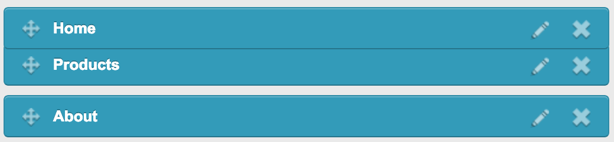

Menus
Menus are simply a set of links to different parts of your site, or even to other websites. This set of links are grouped together into named menus.
- Hover over the Content tab at the top.
- Select Menus from the drop down menu.
- On the right-hand-side of the page there is a button called Add a new menu, click this.
You will then need to enter details to add the menu. The fields are:
Reference This is the name of the menu.
Menu Type You can choose between Links or Custom Content.
Links - This is good to use for a naviagtion menu or submenu.
Custom Content - This is the same box you get when adding content to a page, and gives you the flexiblity to add any type of content that you want.
The majority of menus will be linked-based, as Custom Content is mainly used to create content that you wish to behave like a menu.
Group Select the group that best fits the intention of the menu, for instance a menu that will feature links to pages about the company should go in the About group (if one exists).
Adding links
A menu without links isn't very useful, so lets start bulding up a decent menu. Having just added a menu, or by editing an existing menu, click add a link at the bottom of the page.
The browser will redirect to a new page, where you can set up a new link. You will be presented with the following fields:
Name This is the name of the menu i.e. Main Menu
Link toThis allows you to definer where the link will go, you have a number of choices:
- Referer
- None
- External website
- Page from CMS
- Local path
- Custom MVC
- Legal disclaimer logout
- Legal disclianer
- File
Link targetYou can choose how you want your page to open.
As we want to link to our contact page, we choose Page from CMS. This allows us to select the pages we have created on the site.
(Image here)
Once you've clicked Contact us the link is ready to be saved. Click Save on the right-hand-side of the page.
Do not forget to hit save once you've finished to keep your changes.
Ordering Links
You may want your links to appear in a certain order, i.e. the homepage at the beginning and the contact page at the end.
This is easily possible from the menu edit view. Choose the menu you would like to edit then simply drag the links into the desired order.

Submenus
To create a submenu, you must create two menus:
- A parent menu
- A submenu
Edit the appropriate link in the parent menu, and click the Submenu tab. From here you can select the submenu.
If the CSS allows for it, submenus can have multiple layers. For example if you have a main menu at the top of the page, and under the About link, you want two menus to appear, Information andContact, for example you must create four menus.
These menus would be the parent menu that has the original About link. The first submen which would feature just two links, Information andContact, and then a separate menu for each of those links.